This is Apollo Solutions’ mission statement and our commitment for the next decade: people should be able to learn, run, inspect, and shape AI without asking a handful of companies for permission.
What we believe
We do not believe today’s language models are conscious. We see them as powerful statistical systems that can be wrong, brittle, and surprisingly capable at the same time. Open AI is valuable, and it needs to get much better. We have no hostility toward closed labs or the people who work there. We respect what they build. Our concern is what happens when everyone else loses the ability to choose.
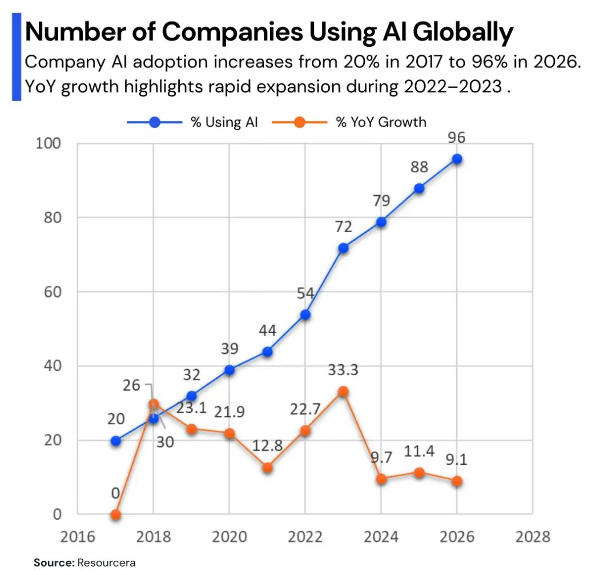
We have felt both excitement and frustration using these tools. They have made it easier for us to research, learn, and build, and changed how we write code. That freedom is real. So is the dependence. A tool that becomes essential to work, communication, or education can change the balance of power between its users and its owners.
The pace is real
In 2025, an advanced version of Gemini Deep Think earned a gold-medal score on the International Mathematical Olympiad problems, according to Google DeepMind and the competition’s graders. A benchmark result does not settle every question about intelligence. It does show how quickly useful capabilities can change. People and institutions will make consequential decisions about these systems long before every uncertainty is resolved.
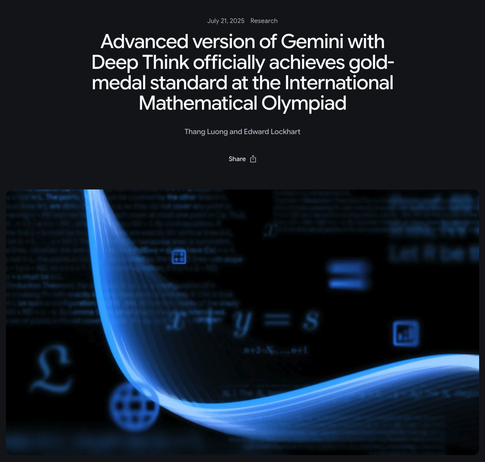
We are also filling the information around us with generated material. A 2026 Graphite study estimated that roughly half of the English-language articles in its Common Crawl sample were primarily AI-generated. That estimate does not measure what people actually read or how much of social media is synthetic. We still see the practical problem every day: convincing images, videos, and text can travel faster than the checks that would establish what happened. Some are used to mislead people or create nonconsensual intimate images. Human judgment and accountability matter more as publication gets cheaper.
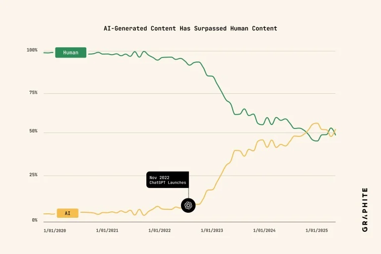
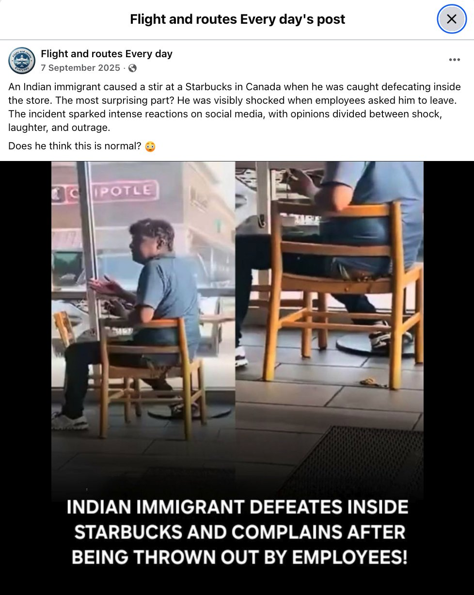
We worry about workers and communities whose jobs may change as AI and automation spread. The timing and scale are uncertain. Waiting until a service is unavoidable before asking who controls it is a poor strategy. The same concern applies to a developer, a small business, a teacher, and a family.
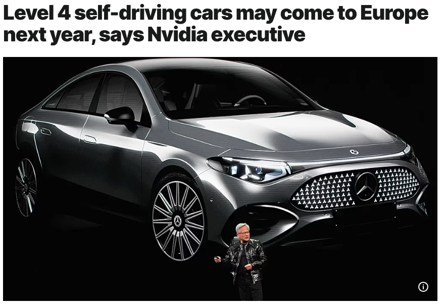
Power needs a counterweight
AI is moving into workplaces, public institutions, and national security. In 2026, Anthropic said its disagreement with the US Department of Defense centered on two proposed exceptions: mass domestic surveillance and fully autonomous weapons. That is Anthropic’s account of the dispute. Whatever position one takes, the boundary deserves a public argument. When AI is used in decisions that affect lives, responsibility belongs to the people and institutions making those decisions.
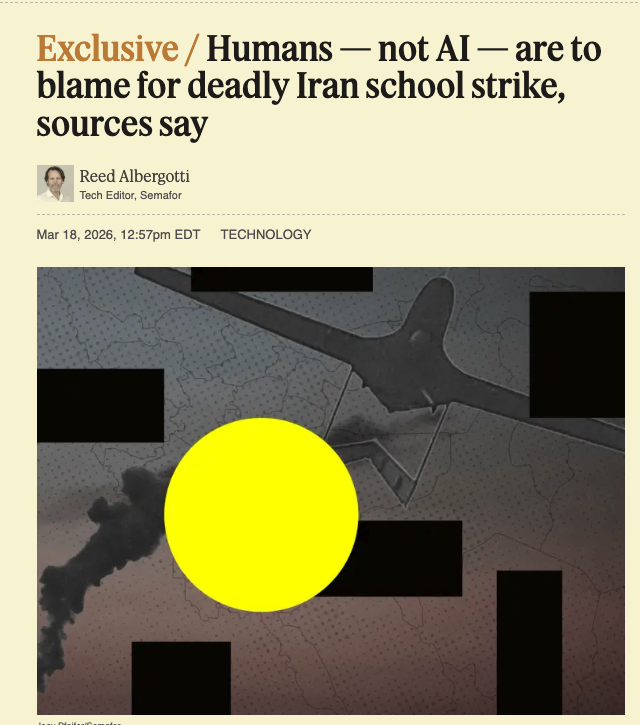
Open weights are a start
Downloadable model weights give people options, including local use. They do not by themselves provide the training code, data information, hardware, or budget needed to improve and run a system. The Open Source Initiative’s AI definition sets a broader standard: people need the practical freedoms to use, study, modify, and share a system. We want more of that freedom, and we want open models that are genuinely useful, not merely available in principle.
Training and serving the largest models still takes expensive compute. Access to an API today is no guarantee that its price, terms, or availability will suit you tomorrow. We benefit from open models released by people across the world. Keeping that ecosystem alive takes distribution, documentation, affordable inference, and people who know how to operate the tools.
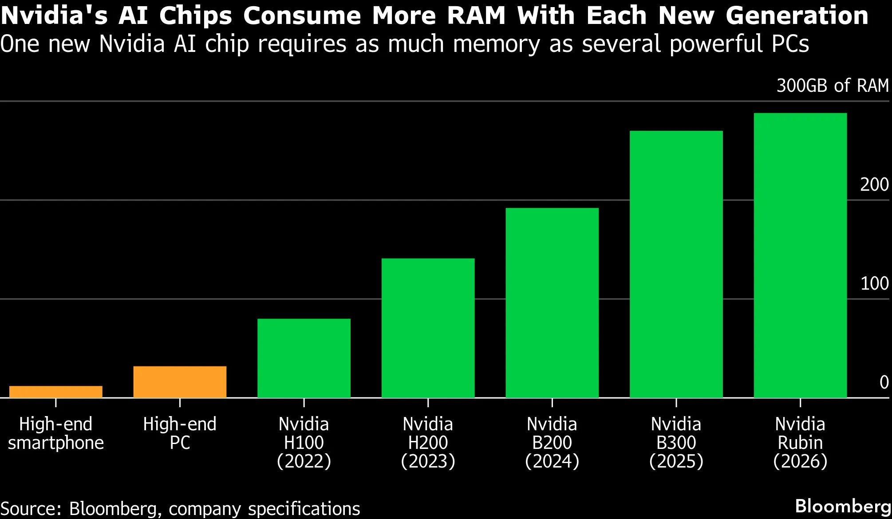
A ride-hail pricing chart in the original note is about a different market and an earlier period. It cannot tell us what AI will do to prices. It does remind us to ask who receives the benefits of technological change.
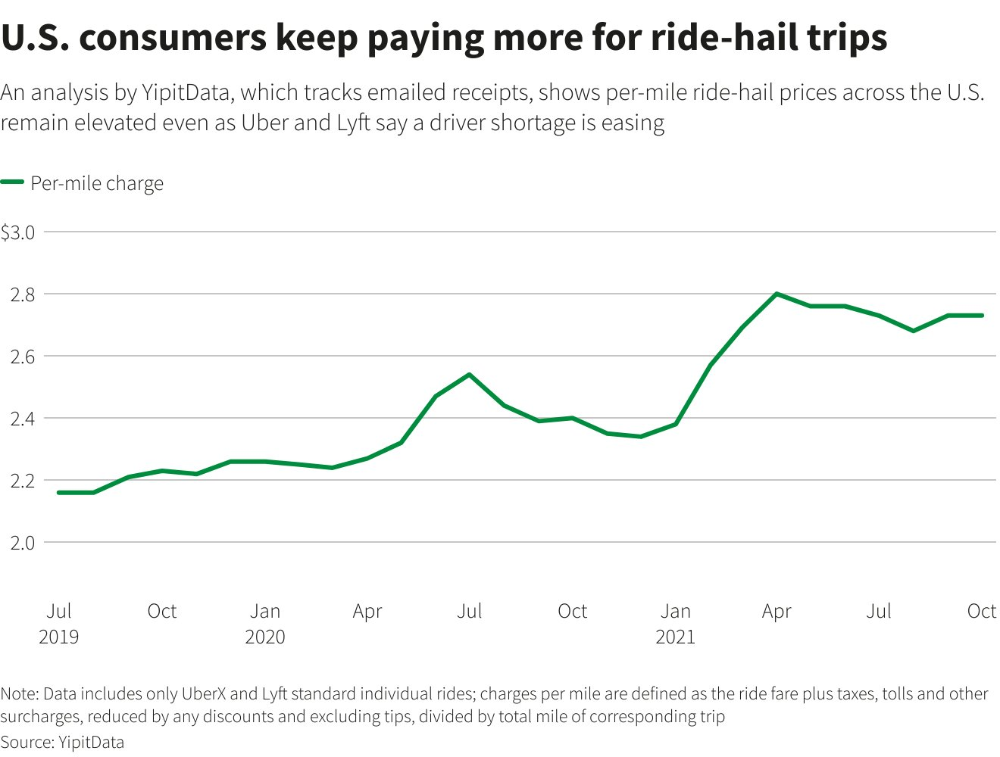
There is workplace pressure too. Some employers now expect AI use as part of the job. A tool that becomes a requirement can deepen dependence, even when it helps people work faster.
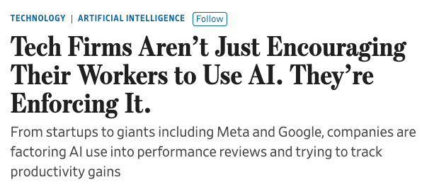
The usage dashboard in the original note shows how deeply these systems can become part of daily work. We want that access to remain a choice, not a single company’s permission.
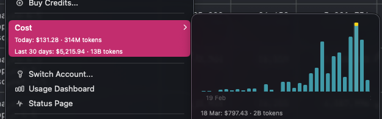
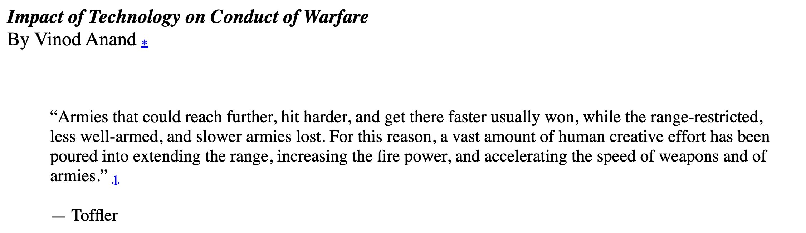
The future we want to build
We do not want the next generation to inherit a world where participation depends on obeying one provider’s rules. We want them to have meaningful alternatives. Choice requires more than a download button.

For the next ten years, we are committing our work at Apollo Solutions to widening access across budgets and borders:
- Education: clear ways to learn how models work, where they fail, and how to use them well.
- Data: lawful, accountable ways to find and prepare data for useful systems.
- Training: methods and tools that smaller teams can understand and improve.
- Distribution: models, documentation, and recipes people can actually obtain.
- Self-hosting: practical paths to run AI on hardware people or organizations control.
- Inference: access that works at more than one price point.
This is a commitment, not a prediction that one project can solve every part of it. Open source must win because people need the power to leave, to inspect, to build, and to choose.
Sources: Google DeepMind, Graphite research, Anthropic’s statement, and Open Source Initiative.